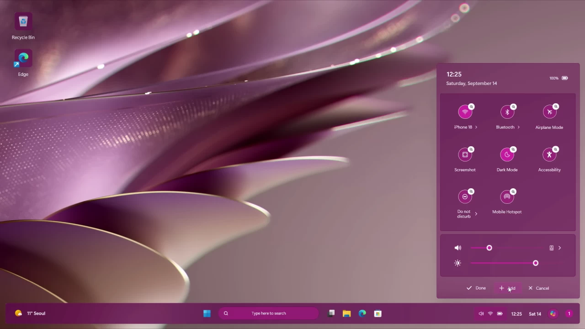

Qual o futuro do Windows?
O que vem a seguir na estética do Windows? Será apenas uma evolução do presente, a retomada de uma estética antiga, ou algo completamente novo e revolucionário? Será um fracasso, ou um sucesso completo? Após procurarmos, achamos um conceito interessante de um entusiasta de design. Segue imagem e link para o vídeo a baixo.

Fonte: AR 4789